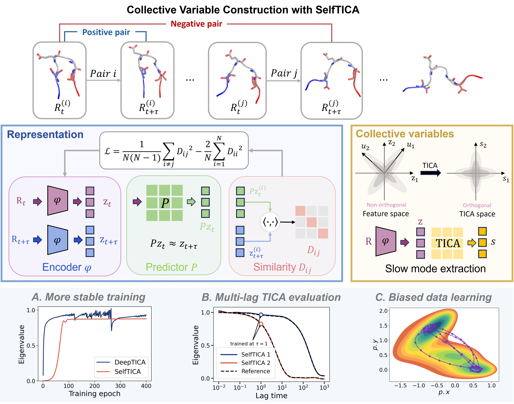

arXiv

Contrastive learning of dynamical representations for enhanced molecular sampling
scholar 0
Identifying collective variables that capture slow dynamical modes is essential for sampling rare events in complex systems. Existing machine-learning approaches often require predefined metastable states, carefully chosen descriptors, or training trajectories with high-quality kinetic information. Here, we introduce SelfTICA, a self-supervised contrastive-learning framework that reformulates collective-variable discovery as dynamical representation learning. SelfTICA defines positive and negative pairs from time-lagged molecular configurations, learns reusable features through a contrastive objective linked to spectral variational principles, and extracts orthogonal slow modes by applying time-lagged independent component analysis in the learned representation space. By decoupling representation learning from slow-mode extraction, SelfTICA avoids direct optimization of eigendecomposition-based objectives and enables spectra and collective variables to be evaluated across lag times without retraining. Across different atomistic systems, SelfTICA learns dynamical representations from limited, biased, or exploratory data and converts them into collective variables that accelerate rare-event exploration and improve free-energy convergence.